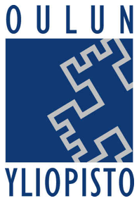

The stories found in this application were written at University of Oulu mainly by the students of University of Oulu using an interactive tabletop device with specially design application.
This application was created as a working prototype for a project II course of University of Oulu, Department of Information Processing Science in the supervision of INTERACT and MediaTeam research groups. The stories and all the information herein is property of INTERACT and MediaTeam. Stories can be used as a research data later on.
